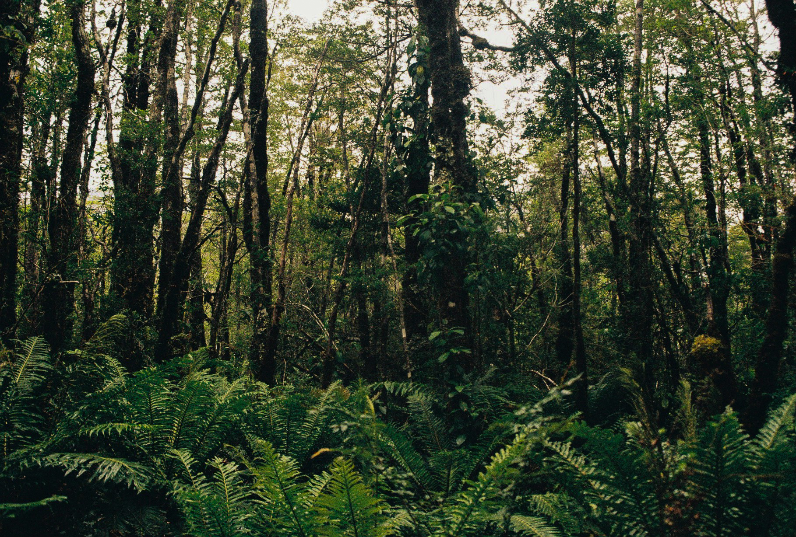
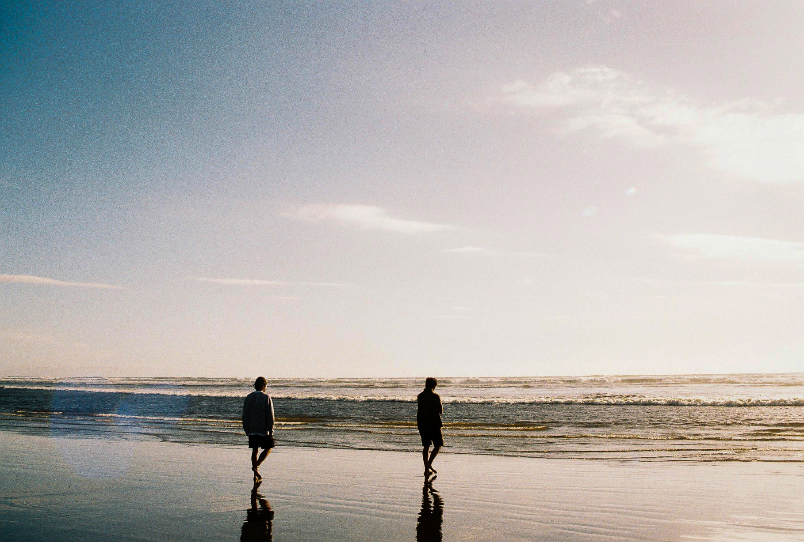
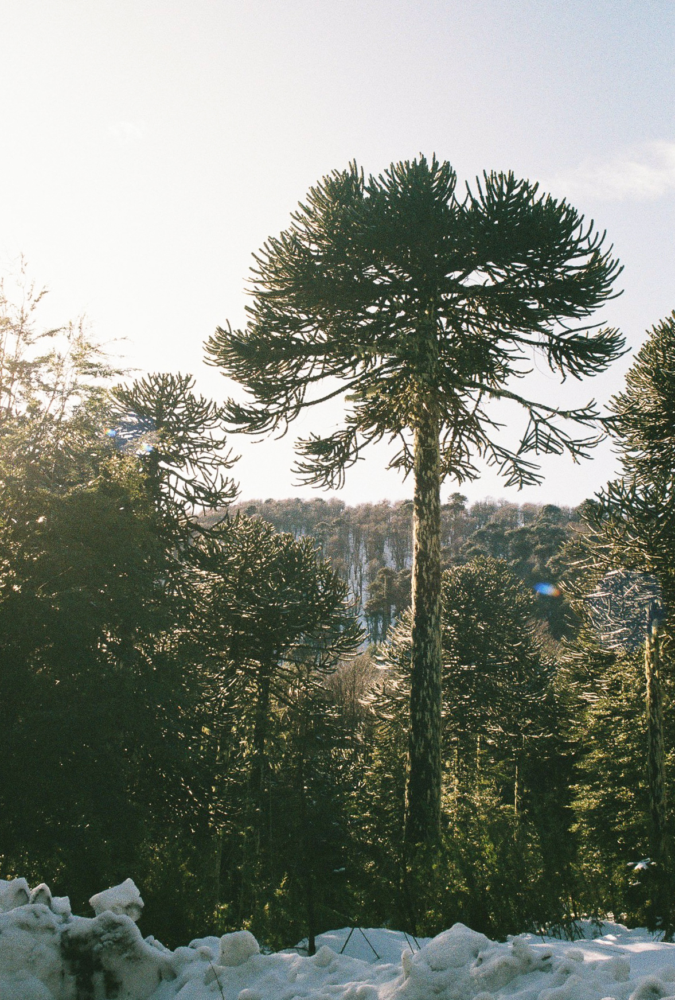
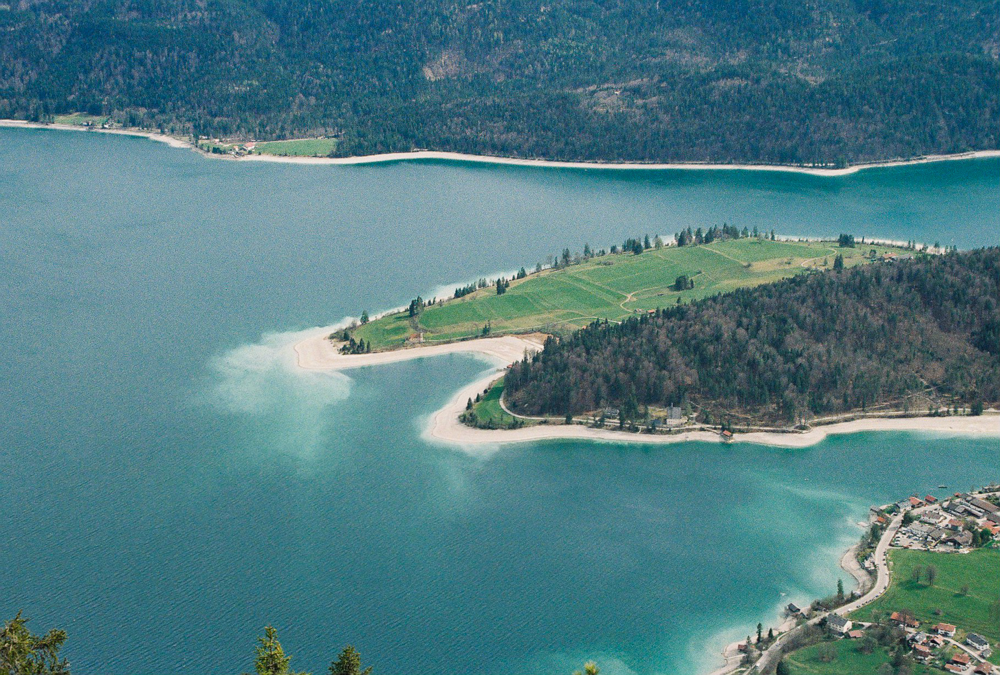
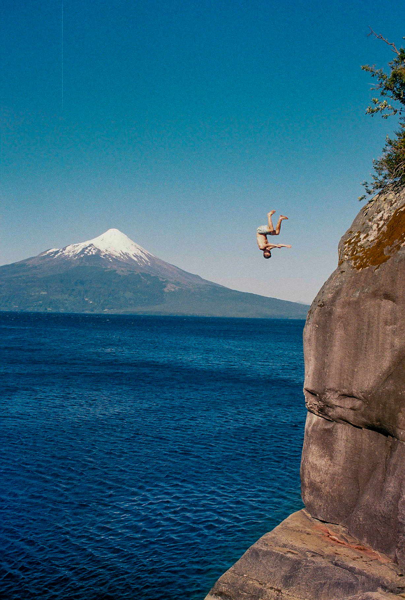
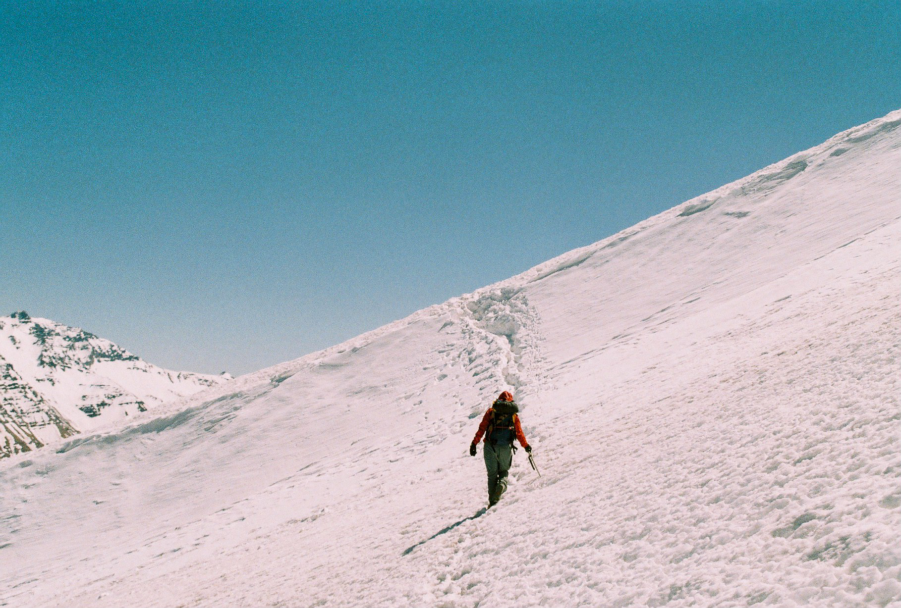
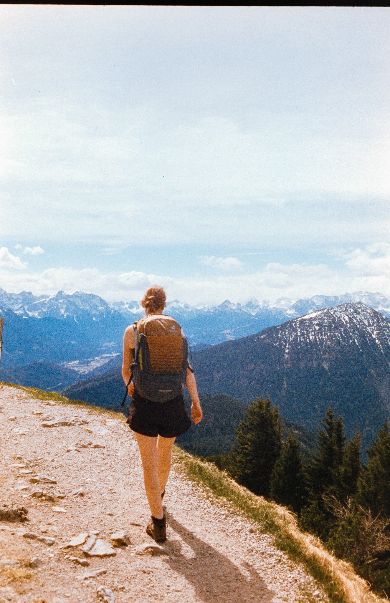

Photography
Since 2020, I’ve been taking nature photos with my analog camera. Over the past years, I’ve learned to work without instant feedback, without a light meter, and without automation. Each photograph is the result of attention, patience, and being present.
The Light
Because my camera has neither a light meter nor automatic settings, understanding the light and choosing the right exposure for each environment is essential. Without immediate feedback, every shot becomes a moment of full attention and intention.


The Moment
With only 36 exposures per roll of film, every shot counts. You learn to choose your moments carefully. On top of that, having the camera ready, with the right settings dialed in, is essential to capturing the emotion of a fleeting moment.


The Arrival
As my focus is nature photography, one of the biggest challenges is simply getting to the right place. That often means carrying everything on my back, the camera, food, and sleeping bag, for days at a time. All of this, while making sure to leave no trace of my presence behind.


Places that have inspired me
- Patagonia Sections in progress
- The Andes Sections in progress
- Chilean Coastline Section in progress
- Northern Chile Section in progress